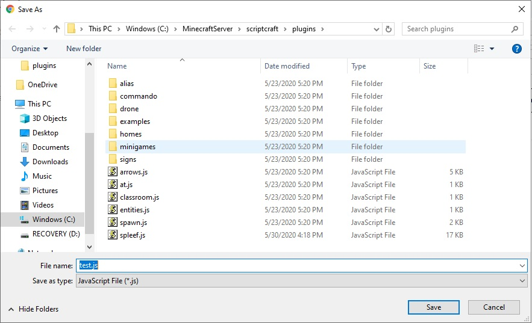
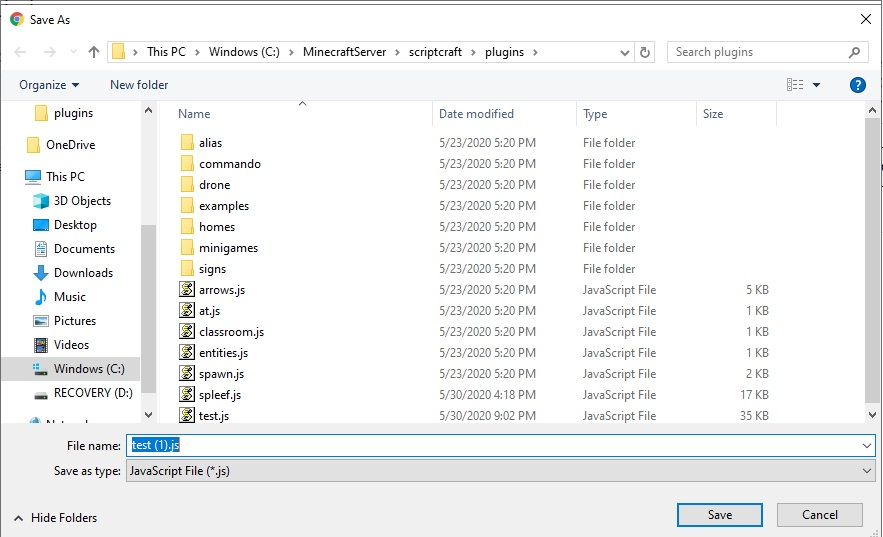
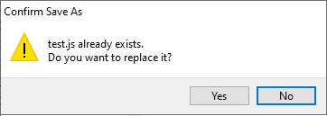

Above the menu is a Search For Block feature that will allow you find any block quickly. To try this out, type "function" into the Search for Block area. It should respond with: Function => Scriptcraft Coding, Functions. This means that the function block is found under the Scriptcraft Coding Menu, subMenu: Functions
To the right of the Search For Block feature are 3 tabs:
On the lower right is a trash can. You can drag blocks into the trash can to delete them. You can also delete or disable a block by right-clicking on the block and selecting delete or disable
One useful feature is the duplicate block feature. You can duplicate a block, by right-clicking on the block and selecting duplicate.
Note: The javascript is automatically created by Blockly-Scriptcraft. You will not need to manually edit this code.
After creating your blocks, click on the "Download to SpigotMC/scriptcraft/plugins" button, and save the file as test.js.

The second time you press the "Donwload to SpigotMC/scriptcraft/plugins" button it will try to save to test.js(1) copy.

Do NOT use this option, it will confuse the server, overwrite test.js instead

This will place your code in an area that the minecraft server can find
Next, in the server console window, execute the command: reload. This tells the server to read all the plugins that are available in the scriptcraft/plugins directory.
By aware that sometimes the server will show an error when you issue the reload command. This is an indicator that there is something wrong with the blocks.
Next run your code by issuing the server command: js test(). This executes the function that you have just created in blockly-scriptcraft.
Also at this time check the server window, sometimes error appear when the test function is executed. This is another indicator that there is something wrong with the blocks.